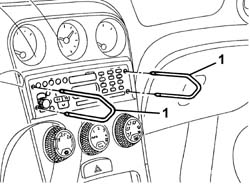
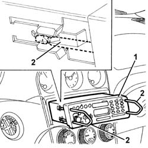
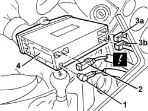

5570T86 radio/phone set - r r
- Path
- Procedures > 55 ELECTRICAL EQUIPMENT > 5570 ACCESSORIES > 5570T car radio and car telephone > 5570T86 radio/phone set - r r
- Kind
- repair procedure (removal / refitting; the operation number is the code)
- Applies to
- all engines; all production periods
- Interactive page
- https://sloeber94.github.io/elrnDB-a156/en/#/3238516
Applies to: all engines; all production periods
 Removing
Removing
 Refitting
RefittingUse the radio removal tools supplied with the car.
1. Fit both tools into the slots on the front of the radio and push in until the mechanism holding the radio in place clicks open.

Applies to: all engines; all production periods
1. Pull out the radio using the tools.
2. Take out the tools.

Applies to: all engines; all production periods
1. Disconnect the aerial coaxial connection.
2. Disconnect the microphone lead connection.
3. Disconnect radio electrical connections (3a, 3b).
 | Name | Connector |
|---|---|---|
3a | Car radio |
| Name | Connector |
|---|---|---|
3b | Car radio |
4. Take out the radio

Applies to: all engines; all production periods
Refitting
RemovingConnect the electrical connections and the radio aerial lead.
Check the radio and speakers are working properly.
Fit the radio into into its compartment, taking care not to compress the electrical wires.
Push the radio fully home until it locks in place.